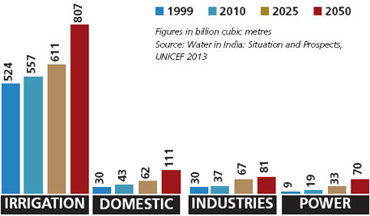

Water Wastage Statistics
Here you can see the statistics of water wastage in some country:
| City | Water Usage (in gallons) | Wastage (in gallons) |
|---|---|---|
| New York | 500,000 | 100,000 |
| Los Angeles | 400,000 | 80,000 |
| Chicago | 300,000 | 60,000 |




We are dedicated to raising awareness about the
importance of water conservation and the consequences of water wastage.
Our mission is to encourage people to adopt water-saving practices in their daily lives and to help them understand the impact of their actions on the environment.
This website include content such as tips on water-saving practices, information on water-efficient technologies,
guidelines for sustainable water management, and educational materials on the impacts of water wastage on the environment and society.
And links to relevant organizations or government agencies focused on water conservation
Water waste refers to the unnecessary use of water, resulting in the loss or squandering of this precious natural resource.
Water waste can occur in various ways,leakage,overwatering,improper water management
1. Household wastage: This type of water wastage occurs in homes and includes activities such as leaving faucets running while brushing teeth or washing dishes, overwatering lawns or gardens, taking long showers, or allowing leaks to go unfixed.
2. Agricultural wastage: This type of water wastage occurs in agricultural practices and includes activities such as inefficient irrigation methods, overwatering crops, and poor water management practices.
3. Industrial wastage: This type of water wastage occurs in industrial processes and includes activities such as excessive water use in manufacturing, improper disposal of wastewater, and inadequate water treatment practices.
4. Municipal wastage: This type of water wastage occurs in municipal water supply systems and includes activities such as leakage in water distribution pipes, inefficient water treatment and distribution practices, and water losses in the water supply chain.
5. Commercial wastage: This type of water wastage occurs in commercial establishments such as hotels, restaurants, and offices, and includes activities such as excessive water use in cleaning, landscaping, and other business operations.
6. wastage: This type of water wastage occurs due to personal behaviors and includes activities such as leaving taps running, overfilling swimming pools, and using water for unnecessary purposes, such as washing cars or driveways.
7. Systemic wastage: This type of water wastage occurs due to systemic issues in water management and distribution systems, such as outdated infrastructure, inefficient water allocation policies, and lack of water conservation measures.
is important to address these types of water wastage to promote responsible water use and conservation to ensure sustainable water resources for future generations.
Here you can see the statistics of water wastage in some country:
| City | Water Usage (in gallons) | Wastage (in gallons) |
|---|---|---|
| New York | 500,000 | 100,000 |
| Los Angeles | 400,000 | 80,000 |
| Chicago | 300,000 | 60,000 |